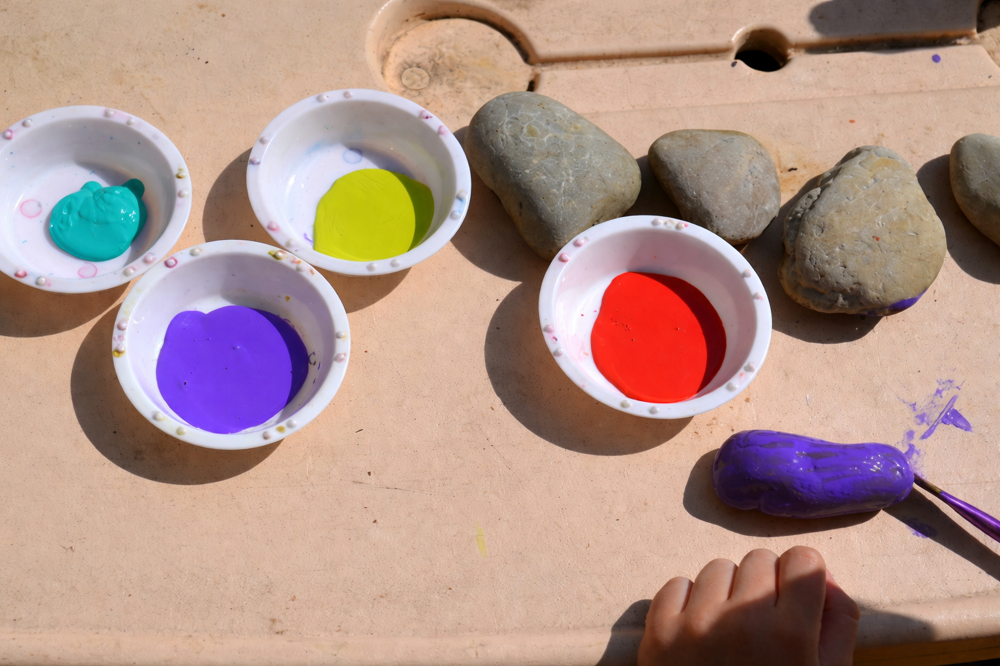

Rock Painting Activity
Ages 2 - 6 - About 10 minutes




What you’ll need:
A few smooth stones
Some newspaper or a drop cloth to protect your work surface
Some markers or paint (we use acrylic)
Paintbrushes
A little imagination.
Directions:
Talk about their ideas of what they want to paint on the stone(s).
Assist your child in cleaning any dirt off the stone(s).
Let your child paint as desired. This is the fun part.
Let the one side of the rock dry and then turn it over and paint the other side.
Completely cover the rocks in paint.
Once they are dry, have your child write the name of the person they are gifting them to.
You can either leave them as is or spray them with a sealer if they are going to be outside.
Ta da! You are all done. Makes a great gift for Father’s or Mother’s Day.
Tips for Success
Use washable paints for easy cleanup.
Let each layer dry before adding details.
Encourage creativity—there are no mistakes!
Seal finished rocks for outdoor use.
Display your creations proudly or gift them to friends.
More Ideas
Paint animals, bugs, or favorite characters.
Write positive messages or jokes.
Make a set of story stones for storytelling.
Hide painted rocks in your neighborhood for others to find.
Use rocks as garden markers or paperweights.